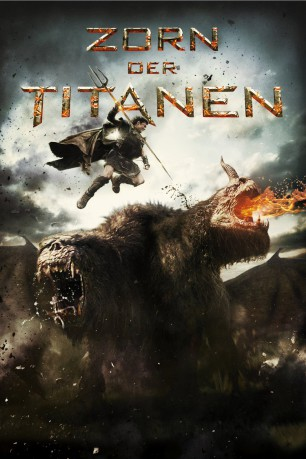

#3357 Zorn der Titanen
Alternativ: Wrath of the Titans
 
 IMDB-Wertung: 5.7 / 10
IMDB-Wertung: 5.7 / 10  Metascore: 37
Metascore: 37 
Ein Jahrzehnt, nachdem Perseus, der Halbgott-Sohn von Zeus, den Kraken besiegt hat, sehnt er sich nach einem ruhigen Leben als Fischer in einem kleinen Dorf und möchte sich ganz der Erziehung seines zehnjährigen Sohnes Helius widmen. Doch unterdessen tobt ein Krieg um die Vorherrschaft auf dem Olymp zwischen Göttern und Titanen. Die Götter verlieren zunehmend die Kontrolle über die eingesperrten Titanen und deren Anführer Kronos, dem Vater von Zeus, Hades und Poseidon. Als Hades einen Putsch gegen Zeus plant, um mit Kronos‘ Hilfe die Herrschaft an sich zu reißen, muss Perseus erneut in den Kampf ziehen und zusammmen mit der Kriegerkönigin Andromeda, Poseidons Halbgöttersohn Agenor und dem gefallenen Gott Hephaestus in die Unterwelt hinabsteigen, um seinen Vater zu retten und die Titanen endgültig zu bezwingen.
Jahr: 2012
Dauer: 99 Minuten
FSK: 12
Land: USA Studio: Warner Bros.Tonspuren: DD5.1 - ,
Untertitel:
Auflösung: 720p (1280x720) Größe: 5212 MB
Genre: Action, Abenteuer, Fantasy
Regisseur: Jonathan Liebesman
Drehbuch: Dan Mazeau, David Leslie Johnson-McGoldrick, Greg Berlanti, David Leslie Johnson-McGoldrick, Dan Mazeau
Soundtrack: Javier Navarrete
Darsteller:
 Sam Worthington als Perseus
Sam Worthington als Perseus Liam Neeson als Zeus
Liam Neeson als Zeus Ralph Fiennes als Hades
Ralph Fiennes als Hades- Edgar Ramirez als Ares
 Toby Kebbell als Agenor
Toby Kebbell als Agenor Rosamund Pike als Andromeda
Rosamund Pike als Andromeda Bill Nighy als Hephaestus
Bill Nighy als Hephaestus Danny Huston als Poseidon
Danny Huston als Poseidon John Bell als Helius
John Bell als Helius Lily James als Korrina
Lily James als Korrina- Kathryn Carpenter als Athena
- Matt Milne als Elite Guard No. 1
 Kett Turton als Elite Guard No. 2
Kett Turton als Elite Guard No. 2 Sinéad Cusack als Clea
Sinéad Cusack als Clea Spencer Wilding als Minotaur
Spencer Wilding als Minotaur- Jorge Guimerá als Theodulus
- George Blagden als Soldier 1
- Killian Burke als Soldier 2
- Caoilfhionn Dunne als Woman 1
- Martin Bayfield als Cyclops
- Richard Goss als Argos Army Swordsman , uncredited
- Jimmy Pethrus als Ancient Greek Soldier , uncredited
 Jd Roth-round als Spartan archer / argos warrior , uncredited
Jd Roth-round als Spartan archer / argos warrior , uncredited- Alejandro Naranjo als Mantius
- Freddy Drabble als Apollo
- Juan Reyes als Prison Warden
- Asier Macazaga als Theron
- Daniel Galindo Rojas als Eustachius
- Lamberto Guerra als Timon
- Alastair Cording als Villager 1
- Alex Claus als Prison Guard , uncredited
- Domingo de Luis als Andromeda's Servant , uncredited
- Morgan Delle Piane als Soldier , uncredited
- Tony Dytrych-Cowell als Argos Warrior , uncredited
- Nick Massey als Argos Army Officer , uncredited
- Dean Pritchard als Argos Army , uncredited
- James Michael Rankin als Argos Army Soldier , uncredited
 Steve Saunders als Scared Villager , uncredited
Steve Saunders als Scared Villager , uncredited
Datei: X:\2-Dilogie(N-Z)\Titanen\Zorn der Titanen (2012, FSK12, 1280x720).mkv seit 17.03.2016
Festplatte: HD Collection-2(A-Z)-3(A-M)
 Alle Filme aus Gruppe '2-Dilogie(N-Z)\Titanen'
Alle Filme aus Gruppe '2-Dilogie(N-Z)\Titanen'